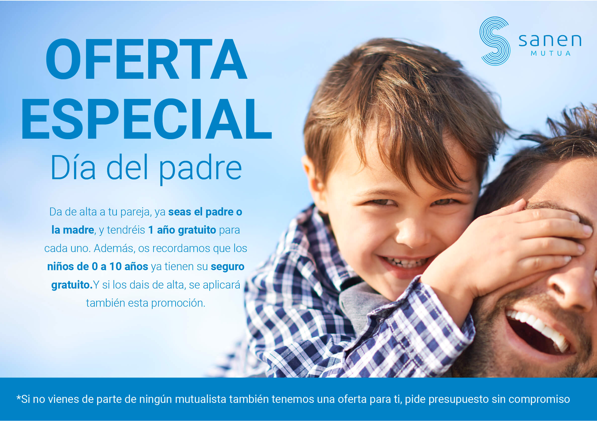
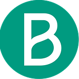
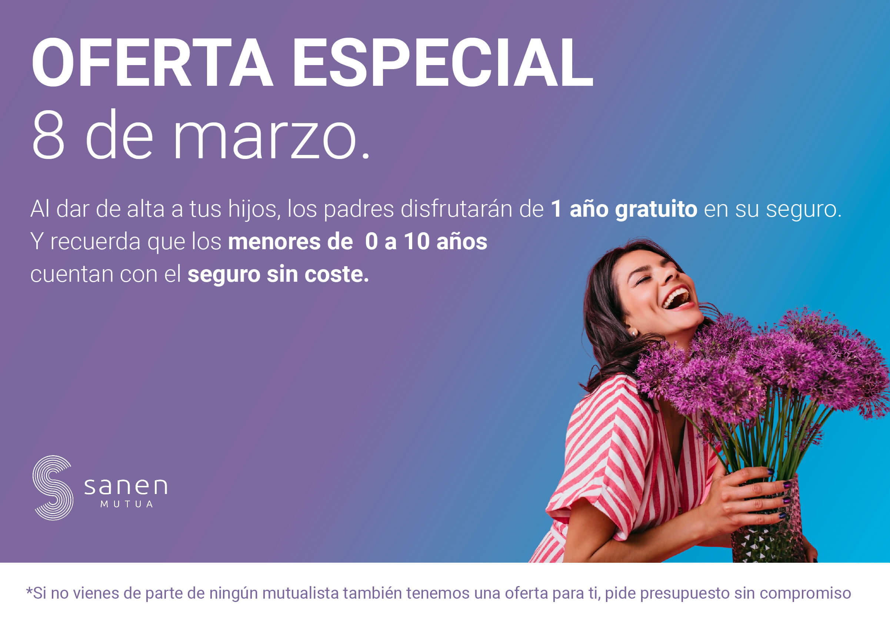
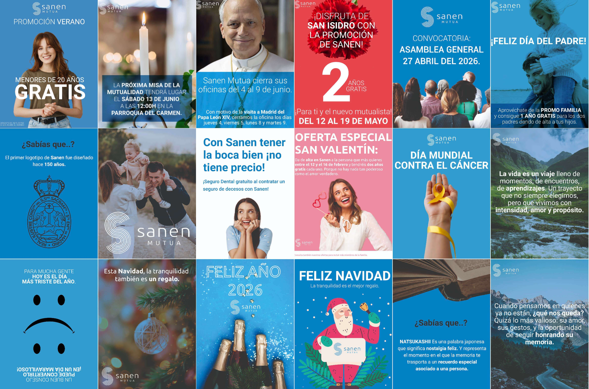

SANEN MUTUA | Seguro de Decesos
A continuación encontrarás una selección de los proyectos de diseño gráfico que he desarrollado para Aldeas Infantiles SOS.
Estos trabajos abarcan campañas dirigidas tanto al área de socios como al área de empresas, adaptando cada diseño a las necesidades y objetivos de comunicación de cada proyecto.

NEWSLETTER DEL DÍA DEL PADRE
El objetivo de este proyecto fue diseñar un pop-up visualmente atractivo que captara la atención del usuario y comunicara el mensaje de forma clara y directa, manteniendo en todo momento la identidad corporativa de Aldeas Infantiles SOS. Una vez finalizado el diseño, el contenido se publicó en la web de Alianzas mediante WordPress en formato pop-up. Al hacer clic sobre él, el usuario era redirigido tanto a la página oficial del evento como al correo de contacto para ampliar la información o realizar la inscripción.
Creatividad · Diseño web · Identidad visual · WordPress

SAN ISIDRO MUTUA 2026
Para este proyecto se desarrolló una composición visual que transmite cercanía y confianza, combinando fotografía, identidad corporativa y jerarquía tipográfica para facilitar la lectura y reforzar el mensaje. Tras el diseño, la newsletter fue maquetada y preparada para su envío mediante Brevo.
Email marketing · Diseño editorial · Maquetación · Brevo


MISA MUTUALIDAD
Este proyecto consistió en el diseño de diferentes banners para campañas de email, creados para comunicar de forma clara y atractiva distintos mensajes dirigidos a socios. Cada pieza fue desarrollada siguiendo la identidad visual de Aldeas Infantiles SOS. Una vez finalizados los diseños, los banners fueron integrados y maquetados en Brevo para su envío.
Diseño gráfico · Email marketing · Identidad visual · Brevo
NEWSLETTER DEL DÍA DE LA MUJER
Para la campaña del Día Mundial de los Hermanos se desarrolló una cabecera para el email con el objetivo de transmitir un mensaje cercano y emocional, resaltando la importancia del vínculo entre los hermanos. El diseño se realizó respetando la identidad visual de Aldeas Infantiles SOS, cuidando la composición, la tipografía y la jerarquía de la información. Posteriormente, la pieza fue maquetada en Brevo para su envío.
Creatividad · Identidad visual · Diseño gráfico · Campaña digital · Brevo


PUBLICACIONES REDES SOCIALES
El objetivo de este proyecto fue diseñar un pop-up visualmente atractivo que captara la atención del usuario y comunicara el mensaje de forma clara y directa, manteniendo en todo momento la identidad corporativa de Aldeas Infantiles SOS. Una vez finalizado el diseño, el contenido se publicó en la web de Alianzas mediante WordPress en formato pop-up. Al hacer clic sobre él, el usuario era redirigido tanto a la página oficial del evento como al correo de contacto para ampliar la información o realizar la inscripción.
Creatividad · Diseño web · Identidad visual · WordPress